Consider transverse waves in a finite 1D chain
Infinite crystal → zero wave vector, zero vibrational energy
Putting it all together:
And if we have different force constants in different directions:
These are the "acoustic" phonon branches
1-atom primitive cell
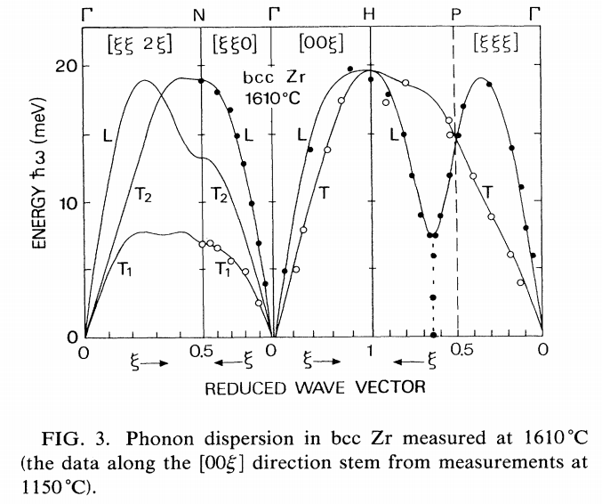
Heiming et al. (1991) Phys. Rev. B 43 10948
\[\mathbf{q} = \Gamma\]
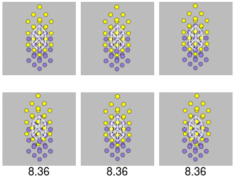
\[\mathbf{q} = \mathrm{X}\]
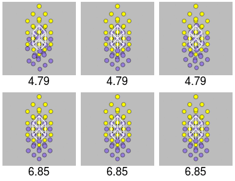
\[\mathbf{q} \approx \Gamma\]
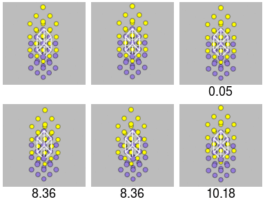
\[\mathbf{q} = \mathrm{X}\]
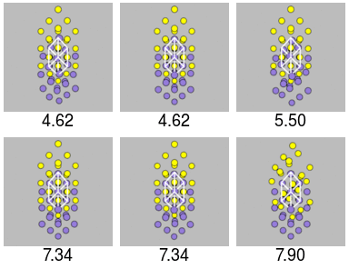
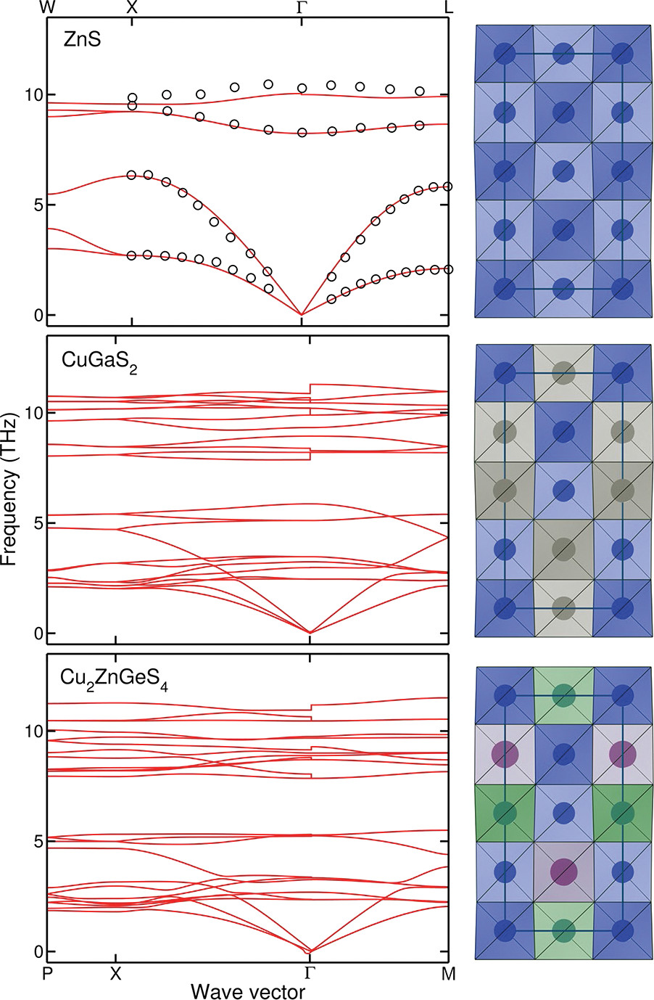
Shibuya et al. (2016) APL Mater. 4 104809
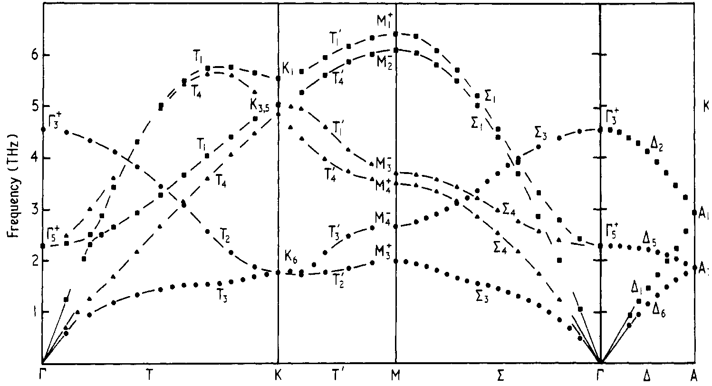
Composite from Almqvist, L. & Stedman, R. (1971) J. Phys. F.: Met. Phys. 1 312
| Direct method | DFPT |
|---|---|
| Linear scaling for large cells | Lower cost for small cells |
| More tolerant of imperfect structure | No need to converge displacements |
| Exact force constants for qpts commensurate with supercell | Large supercells very expensive |
| Displacement calculations can be distributed over many jobs | Restart unavailable in VASP |
Imaginary modes close to Γ are generally associated with calculation accuracy problems.
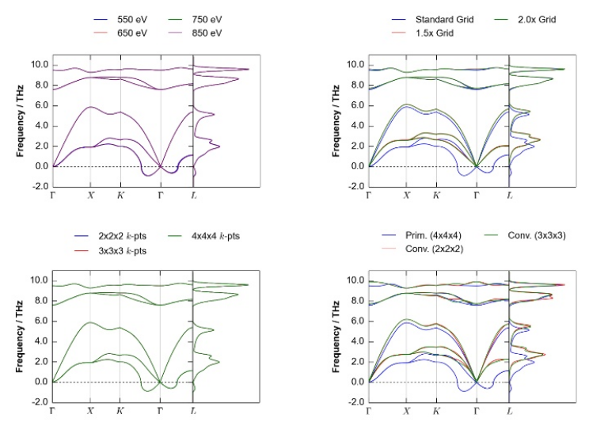
Jonathan Skelton has some helpful slides on these issues https://www.slideshare.net/jmskelton/phonons-phonopy-pro-tips-2015
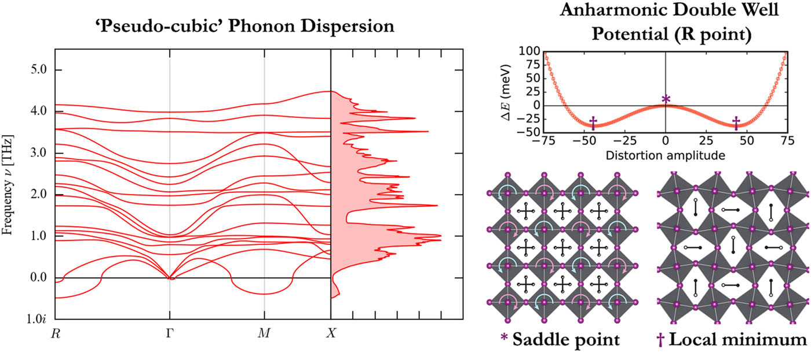
Whalley et al. (2017) J. Chem. Phys. 146 220901
Force constants are recalculated at different volumes
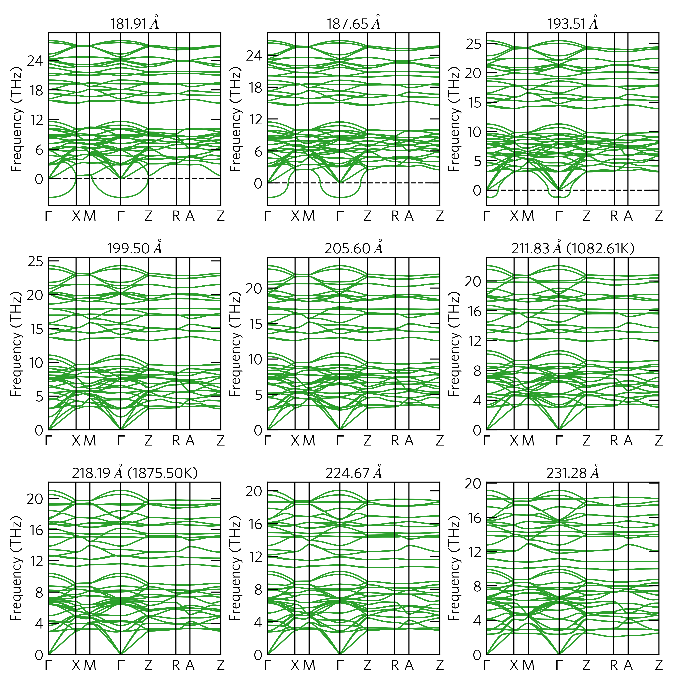
Interpolate between calculated volumes to obtain equation of state
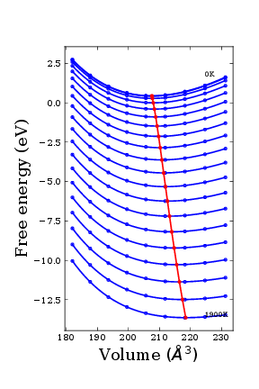